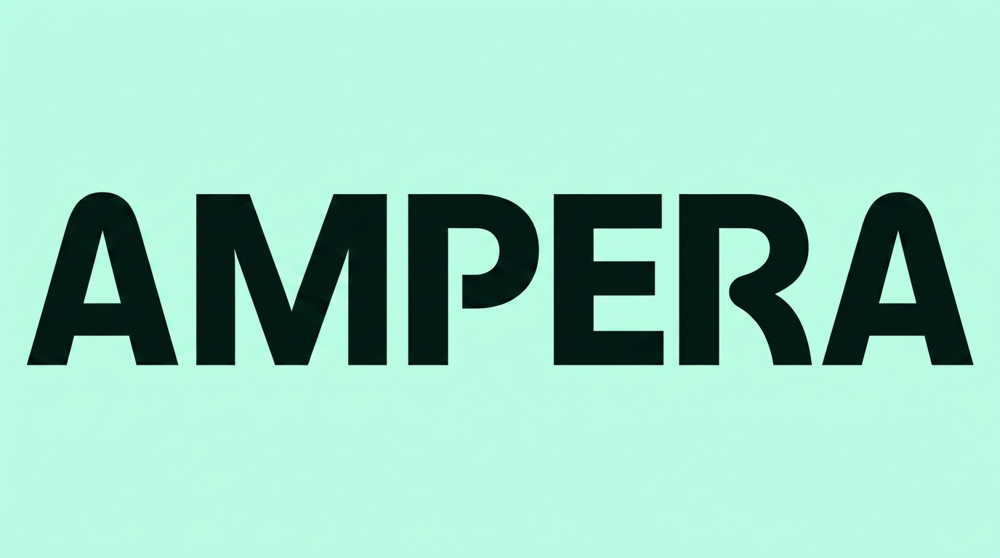

| Criterion | Volume | Repeatability | Data access | FCR / quality gap |
| Scope | ≥ 15% of total contacts | Structured, predictable resolution | Backend exposes resolution data | Current score well below potential |
| Why it matters | Low volume = low ROI regardless | AI fails on edge cases | No data = worse than human | High gap = high room to improve |
| Contact reason | Volume | Repeatable? | Data? | FCR gap |
|---|---|---|---|---|
| Session failed to start | 31% | ✅ Yes | ✅ MCP/backend | 61% → 85% |
| Payment / refund | 26% | ✅ Mostly | ✅ Payment platform | 48% → 75% |
| Station info / availability | 17% | ✅ Yes | ✅ Real-time network | 78% → 90% |
| Charge quality complaint | 14% | ⚠️ Partial | ⚠️ Partial | 39% — complex |
| Account / app issue | 8% | ⚠️ Variable | ⚠️ Partial | 65% — acceptable |
| Use case | Volume | Repeatable? | Data? | Quality gap |
|---|---|---|---|---|
| QA Agent | 100% of all interactions |
✅ Yes structured scoring |
✅ Intercom + BPO + Whisper STT for calls |
CSAT 3.1 → ≥3.8 0 interactions scored today |